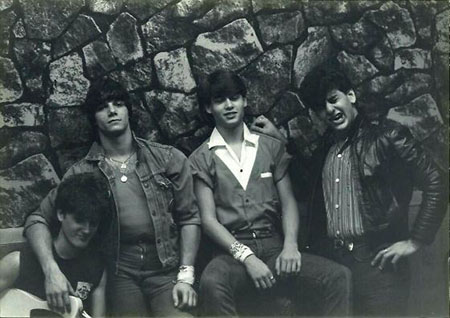

John Christopher Depp was born June 9th, 1963 in Owensboro Kentucky. For the most part, Depps ancestry consists of English, Dutch, and a little Belgian and French. During his childhood he moved alot from place to place; living in more than 20 different places, eventually settling in Miramar, Florida.
A few years after they settled in Florida, his parents got divored; his mom soon marrying Robert Palmer who he was called an "inspiration". Ever since he was a child, his mom was always wroking from day to night, this not only affected him emotionally but physically as well. His father drank alot during his spare time, this made him start swearing to his parents at the age of 12 soon starting to also abuse on drugs an alcohol. At the age of 13 he was already sexually active.
Johnny Depp is considered one of the most successful actors of all time in terms of how he manages to convert into so many dynamic characters. He is a very talented actor, filled with motivation. his personal life is someting that many look after and the way he manages to grow into the person he is now. During his early years, Johnny Depp had alot of music goals however it didnt take as much for him to discover that his career path was going to be the film industry.
At the age of 20, Depp became a guitarist in the well known band names "The Kids". With this band he started to become popular and his sales grew rapidly on a local level. After this imapcted his life, he got to meet a makeup artist names Nicalos Cage which has way more experience than Depp. Cage then introduced Depp to his agent and that is when he went to audition for the film "The Nightmare at Elm Street".
After the film of The Nightmare on Elm Street, he expected that his musical career was going to grow, however this started his career as a professional actor in Hollywood. Most of the money that he spent was on acting classes. Soon after that he accepted a invitation with the film director John Waters who made Depp a part of another movie called "21 Jump Street". In 1989, he was also chosen by Tim Burton to have a lead role in the movie "Edward Scissorhands" that made him climb Hollywood. By the early 2000's, Johnny Depp had already been in at least more than thrity films.